Клінічний випадок · журнал «ДентАрт» 2023 №3
Вертикальна фрактура зуба
Vertical Tooth Fracture
Увазі колег пропоную розгляд клінічного випадку, в якому показово буквально все: від комунікації з пацієнткою та анатомічних особливостей зуба — до кульмінаційного завершення переліковування.
Цього разу хочу від найпершого абзацу акцентувати увагу саме на висновках лікування і почну з аксіоми про потребу будь-яке ендодонтичне лікування завершувати фіксацією ортопедичної конструкції. Здавалося б, це правило знає кожен студент з третього курсу стоматологічного факультету, але річ не в нашому знанні, а в нашій спроможності пояснити і довести пацієнтам потребу такого рішення.
Вважаю необхідним мати в портфоліо ваших робіт кілька фотографій з вертикальною фрактурою кореня і перед кожним початком ендолікування виділяти кілька хвилин на розмову з пацієнтом і обговорення ризиків та можливих варіантів розвитку подій, а випадки відмови фіксувати в договорі і мати під тим підпис пацієнта. Таким чином ви звільните собі купу часу і не матимете потреби через пів року проводити консультації з приводу видалення зуба.
Пацієнтка знайшла мої координати в інтернеті і розповіла про свої проблеми із зубом, який почав її турбувати через деякий час після ендолікування в іншій установі. Під час оцінки рентгенівського знімка стало зрозуміло, що попередньо було знайдено не всі кореневі канали. І ясна річ, зуб почав турбувати. Зважаючи на скарги, було проведене розпломбування зуба, тому що «він не витримував герметизму», і пацієнтку це дуже турбувало. Але, як ви бачите на знімку, розпломбовано було не все.
Під час консультації пацієнтка розповіла про гайморит і про те, що лікар-отоларинголог чітко пояснив залежність запального процесу гайморової пазухи від неякісного попереднього лікування зуба 16. Словом, на консультацію прийшла людина, виснажена тим, що зуб постійно болить, гайморова пазуха так само не дає спокою, лікарі загального профілю розводять руками — ідіть до спеціаліста, а через те, що постійно були мігрені, невропатолог ставив діагноз — неврит…
У таких випадках дуже важко привести пацієнта до тями в психологічному контексті. Тому що треба переконати людину в тому, у що вона не вірить. Часто пацієнти не розуміють нашої інформації про мікробну флору, про те, що загалом мікроби і токсини винні у виникненні болю, що всі болісні прояви, про які нам розповідають пацієнти, виникають саме через погано проліковані кореневі канали.
Ми домовилися з пацієнткою, що обов'язково перевіримо цей зуб на прийомі на наявність тріщин та перфорацій і з'ясуємо, чи можна такий зуб врятувати. Що ж насправді є проблемою у цьому клінічному випадку? Спочатку був підписаний договір про проведення ендодонтичного лікування, де описані всі деталі роботи з такими клінічними випадками.
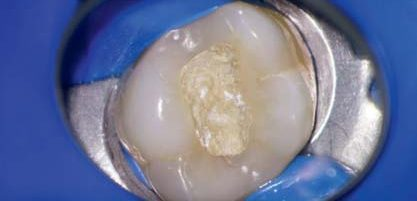
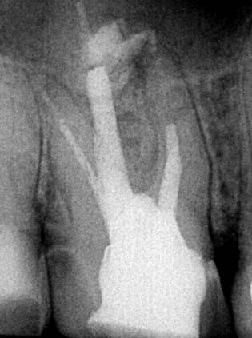
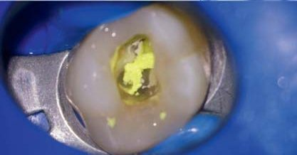
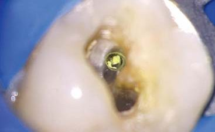
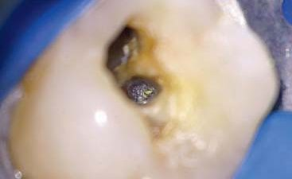
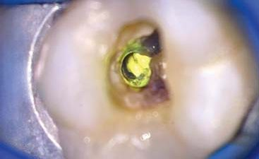
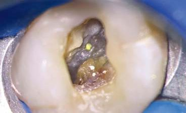
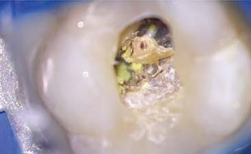
На початку лікування обов'язковими є пальпація та перкусія, вимірювання та зондування борозни, допоміжні рентгенівські знімки (за необхідності КПКТ). Без мікроскопа в таких складних ситуаціях я не раджу навіть пробувати втручатися, тому що саме збільшення і дає перевагу як у діагностиці, так і в лікуванні.
Якщо на прийомі первинно було з'ясовано, що зондування в нормі, немає патологічної рухливості, тест на накусування говорить, що зуб цілий. Пальпація і перкусія можуть свідчити про те, що запалення в зубі є і тканини реагують на це.
Під час огляду було виявлено тимчасову пломбу з водного дентину (це робити сьогодні категорично заборонено, тому що ні міцності він не додає, ні пломбою називатися не може), після зняття якої виявилося, що канали після того, як було зроблено спробу їх перелікувати, були сильно вимазані Metapex — масою з СаОН на основі силіконової олії і йодоформу, який взагалі не має жодного впливу на лікування кореневих каналів і його дуже важко вимити. Єдиний помічник — це мікроскоп, тому що цей матеріал жовто-салатового кольору і його гарно видно. Але для цього витрачається досить багато часу. Якщо ми і використовуємо гідроксид, то без добавок — білий СаОН.
Досить важливий етап — це формування вторинного доступу. Ідеться про пульпову камеру. Важливо і правильно її відкрити, прибрати каріозні ураження, і також не видалити зайвого — зуб і так втратив дуже багато. Ще потрібно пам'ятати, що правильне формування доступу — це логічне продовження формування кореневого каналу. Забігаючи наперед, можу впевнено сказати, що неправильний первинний і вторинний доступ — це СХОДИНКИ.
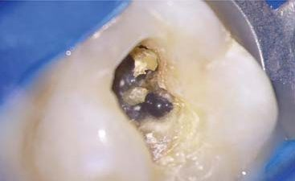
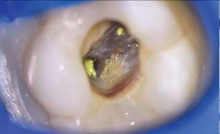
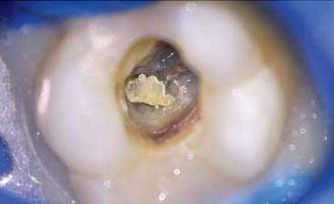
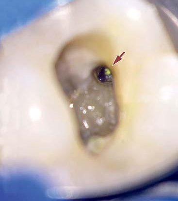
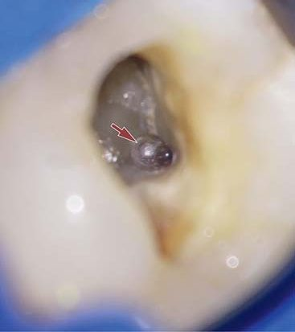
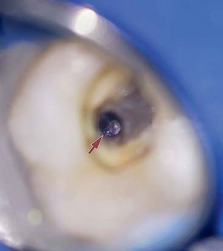
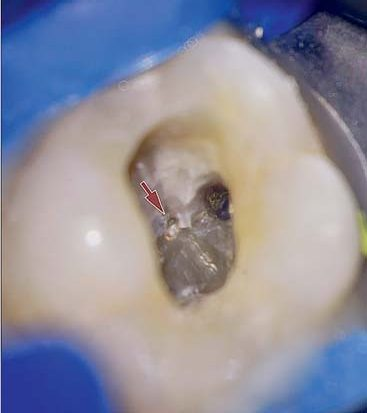
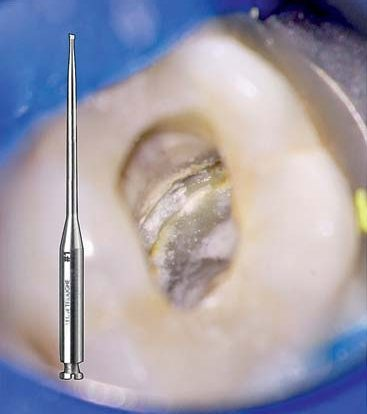
Опрацювання кореневих каналів на момент очищення від Са провадилося гіпохлоритом Na, ротаційними файлами E3 Azure (Poldent) та К-файлами. Останні потрібно підгинати, щоб обійти сходинки.
Якщо все вийшло вдало і сходинки не стали проблемою, потрібно сформувати кореневі канали. Використовуючи E3 Azure, вдалося досить швидко обережно і прагматично добитися цілі. За допомогою устьових файлів 30.08.19 мм легко знімаються навислі краї устя кожного з каналів. Після цього вхід стає ширшим і можна краще роздивитися, де несправжній хід, а де справжній кореневий канал. Тут використовуються К-файли маленьких розмірів (06.08.10). Також можна використати ручні інструменти microopeners від Maillefer.
Алгоритм при опрацюванні каналів був простим: 30.08.19 мм — 500 об/хв з торком 1.0 — обробка устя. Утворення прохідності — 10(15) К-файл, і на 1000 об/хв вводимо Easy Path 14.04. Після цього файла, який використовувався для формування килимової доріжки за умов, що ці канали вже були опрацьовані, можна сміливо вводити 25(20).06.25 мм і завершувати 35(40).04. Калібрування апікальної частини, враховуючи періодонтитні зміни, за яких часто утворюється резорбція апекса, робиться К-файлами під контролем апекслокатора. Наприклад, піднебінний канал мав апекс 70.02, і фактично знадобилося 3 інструменти — устьовий 30.08, ультразвук і калібровка апексу 70.02.
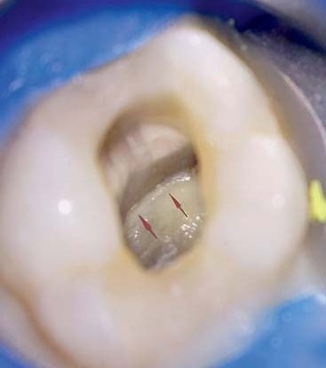
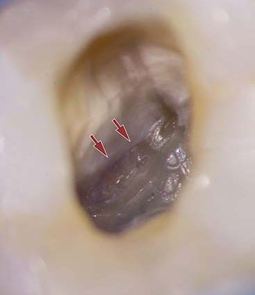
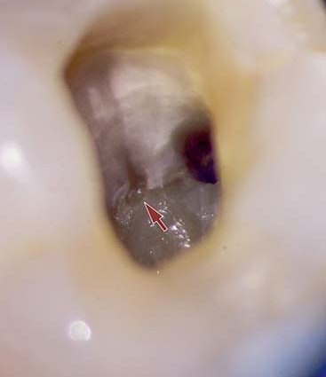
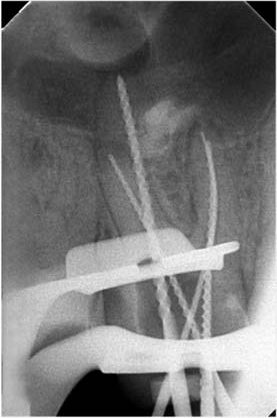
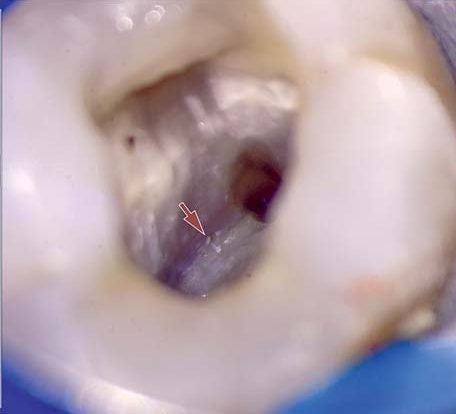
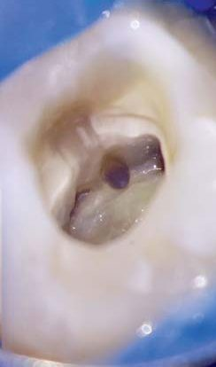
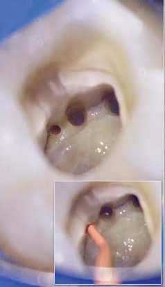
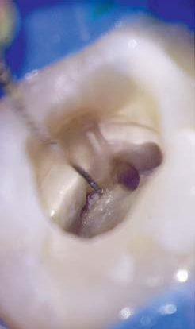
Кожного разу пацієнтам, яким лікую зуби, я кажу про те, що сила, з якою ми стискаємо свої зуби, має навантаження 300-340 кг, а зуби, які пройшли ендолікування, за статистикою, витримують навантаження лише 121,7 кг. Відтак ендодонтично ліковані зуби не можуть бути відновлені красивою фотополімерною реставрацією. Це помилка. Тому що будь-яка пломба/реставрація — це такий самий протез для зуба, як і керамічна конструкція (накладка або коронка). Жодна пломба/реставрація не може змагатися з фізичними якостями кераміки. Єдине, що може змагатися, — це факт ціни. Але якщо зуб трісне, то потрібен імплант, який коштує набагато дорожче, ніж керамічна вкладка або коронка. Тобто є необхідність наприкінці лікування, перед тим, як пацієнта відпустити, розповісти ще раз про наслідки, які можуть статися, якщо нехтувати порадами досвідченого лікаря.
Обговорення
Зуб 16 лікований раніше з приводу ускладненого карієсу. На рентгенологічному знімку біля кожного з коренів — розширення періодонтальної щілини, розрідження кісткової тканини та недопломбування кореневих каналів. Прийнято рішення почати з ревізії кореневих каналів, що відразу дало позитивну динаміку і полегшення симптомів.
У випадках гострого перебігу, наявності ексудації з кореневих каналів я ніколи не форсую події і роблю ендо за 2-3 візити в залежності від розвитку ситуації. Усі етапи лікування були детально описані безпосередньо під фото, і мені б хотілося звернути увагу не на протоколи лікування, а на діагностику, концептуальність і загальне клінічне мислення кожного, хто буде мати справу з такими випадками.
Незважаючи на те, що вдалося дезобтурувати кореневі канали, де були сходинки, пропущена анатомія, лікування було завершене видаленням внаслідок вертикальної фрактури зуба, всі зусилля виявилися марними, що не могло не засмутити мене як досвідченого лікаря.
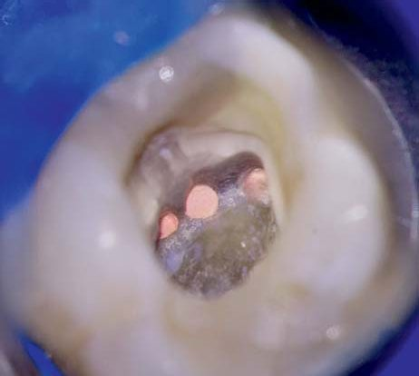
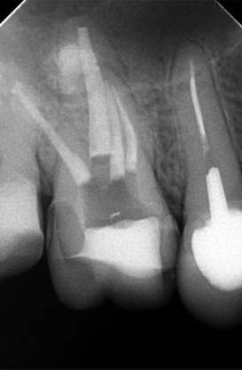
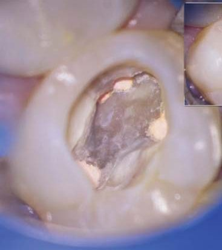
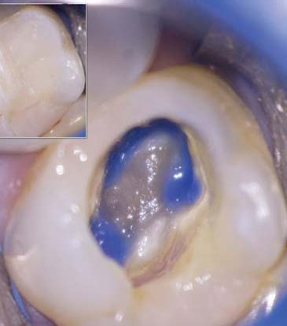
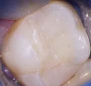
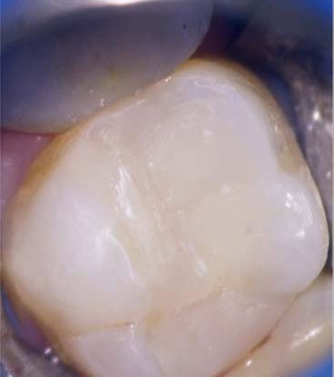
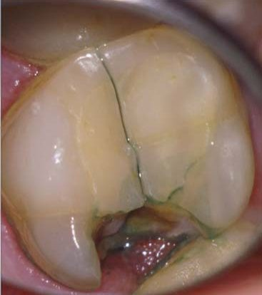
Висновки
Дуже важливий етап завершення лікування у реферативній практиці — це прослідкувати, щоб зуб було відновлено протягом місяця. Бажано зробити собі нагадування в програмі для повторного контакту з пацієнтом, а також лікарем-рефералом і нагадати про ризики та можливі наслідки, якщо лікування не завершене. Адже часто буває, що пацієнти забувають про домовленості і не розуміють усієї важливості відновлення зубів після ендодонтичного лікування. Тому у вашій практиці має бути запроваджене підписання ендодонтичної угоди між пацієнтом і лікарем (або клінікою), де вказані всі можливі наслідки та ризики.